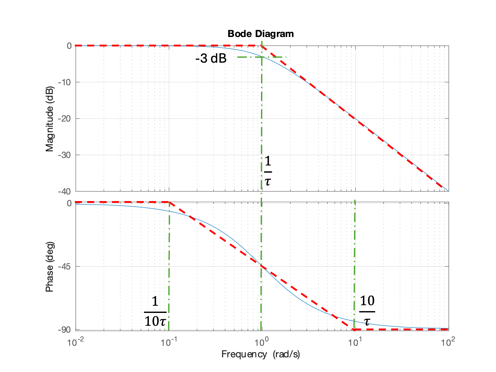
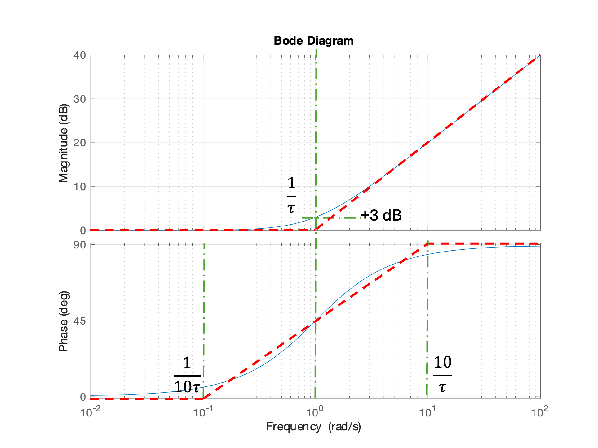
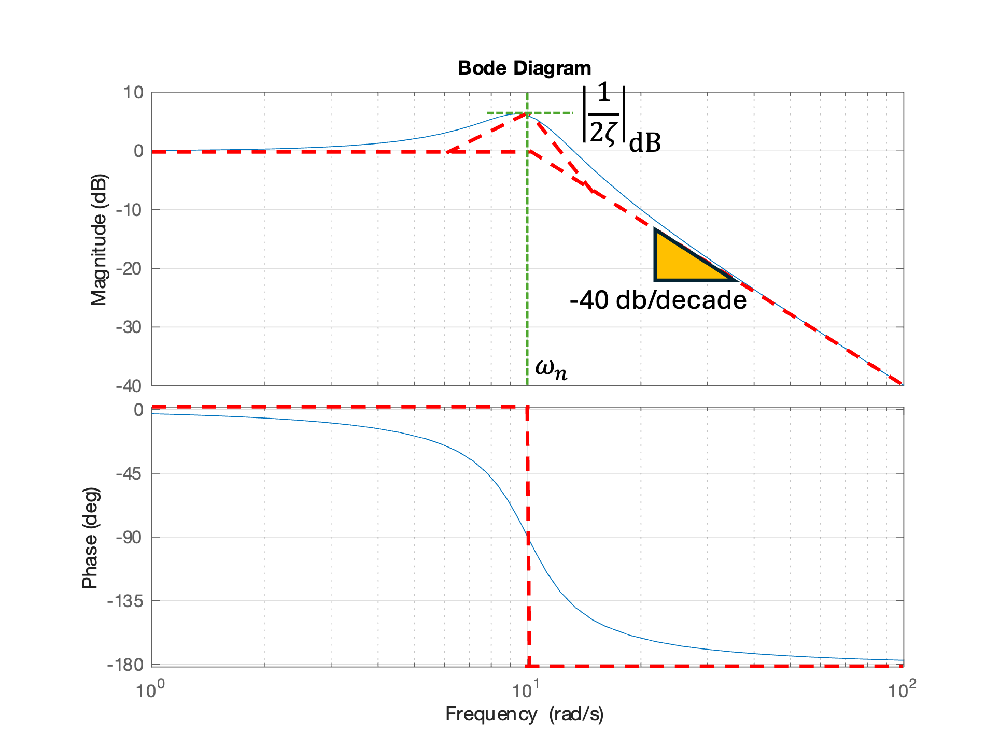

Unit 6.2: Bode Plots#
Follow along at cpjobling.github.io/eg-150-textbook/freq_resp/tf_response
Acknowledgements#
This Unit is preparation for EG-247 Digital Signal Processing and EG-243 Modern Control Systems. It will not be examined for EG-150.
The notes for this unit have been inspired by Carlos Osorio’s MATLAB Tech Talks series on Understanding Bode diagrams [Osoria, 2013] with details adapted from the Example 5.47 in [Hsu, 2020].
Agenda#
Introduction#
We introduce this section with a YouTube video What are Bode plots? from Carlos Osorio of the MathWorks (publisher of MATLAB) [Osoria, 2013]
The remaining videos, the first of which introduced the previous unit, Unit 6.1: Frequency Response of a Transfer Function, can also be viewed on the YouTube playlist Understanding Bode Plots also published on the MATLAB channel by the MathWorks.
A little history#
Fig. 85 Portrait of Hendrick Wade Bode (Public Domain Details)#
{kind=link}
Quoted from Hendrik Wade Bode, Wikipedia:
Hendrik Wade Bode (December 24, 1905 – June 21, 1982) was an American engineer, researcher, inventor, author and scientist, of Dutch ancestry.
He made important contributions to control systems theory and mathematical tools for the analysis of stability of linear systems.
In 1938, [Bode] developed asymptotic phase and magnitude plots, now known as Bode plots, which displayed the frequency response of systems clearly.
Frequency Response#
{kind=link}
Fig. 86 Steady-state response of of a stable LTI system is \(y(t) = M \sin\left(\omega t + \phi\right)\). Screenshot from video What are Bode Plots? [t=28 seconds] from [Osoria, 2013]#
In Unit 6.1: Frequency Response of a Transfer Function we explored the idea of a frequency response and showed that, after the transient response of a stable LTI system, subjected to a sinusoidal input \(x(t) = A_\mathrm{in} \sin\left(\omega t\right)\) has died away, the steady-state output will be another sinusoid \(y(t) = A_\mathrm{out} \sin\left(\omega t + \phi\right)\).
This is illustrated in Fig. 86.
We also showed, in Activity, that you can plot amplitude gain
and phase shift \(\phi\) of the output against frequency to produce a frequency response diagram such as that shown in Fig. 87.
{kind=link}
Fig. 87 Plot of magnitude v phase plotted against frequency interpolated from individual measurements. Screenshot from video What are Bode Plots? [t=1 minute 28 seconds] from [Osoria, 2013]#
The plot of amplification (\(M\)) and phase (\(\phi\)), usually plotted against the log of frequency \(\omega\) rad/s, is called a Bode plot.
If you are constructing one of these yourself, you need to be sure to use sufficient values of frequency to capture all the important features (such as resonant peaks and corner frequencies) of the response.
Calculation of Frequency Response#
If we have a system with impulse response (transfer function) \(H(s)\), the steady-state frequency response can be calulated by letting \(s = j\omega\).
That is the system function
can be used to compute the frequency response directly.
In particular, the magnitude
and the phase angle
Note
The magnitude and phase are usually plotted against \(\omega\) on a logarithmic scale with magnitude defined in decibels:
and phase in degrees:
In MATLAB, we can easily obtain a Bode plot by defining our system as a transfer function LTI model using the tf function and passing the system object to the bode function.
format compact
Hsys = tf(400,[1, 10, 400])
Hsys =
400
----------------
s^2 + 10 s + 400
Continuous-time transfer function.
bode(Hsys),grid on
Terminology used#
When discussing frequency responses in general, and Bode plots in particular, we need to define some terms that will be used.
You should should make a note of these for future reference.
DC-gain#
Magnitude \(M\) at \(\omega = 0\) or DC.

Roll-off rate#
The roll-off rate refers to the slope of the magnitude plot as the magnitude drops off at high-frequency. It is usually quoted in dB per decade1, where a decade is a ten-fold increase in frequency.

Natural-frequency#
Any peaks in the magnitude frequency response will be associated to some natural frequency in the poles of the system.

Cross-over frequency#
In the bode-plot, at low frequency, the gain is 0 dB (or 1). Above the cross-over frequency2 the gain is less than 1 and the system starts to attenuate the input signal.

Bandwidth frequency#
Above the bandwidth frequency the RMS value of the system is below the RMS value of the input. This so-called half-power frequency occurs when \(M = \sqrt{2}/2 = 1/\sqrt{2} \approx 0.707\) or \(20\log_{10}\left(0.707\right) \approx -3\) dB3.

Aysymptotic Bode plots for first-order systems#
In the remainder of this unit, we will rely on the explanations given by Carlos Osorio in Parts 3 and 4 of [Osoria, 2013]. This material is also covered in Worked Problem 5.47 from [Hsu, 2020].
You can always produce a Bode plot for a system by use of the tools provided in MATLAB.
However, a knowledge of the asymptotic behaviour of first and second order poles (the insight gained by Bode in 1938), provides a powerful tool for analysis and design of systems in the frequency domain.
Exploring Bode Plots for Simple Systems#
[See video in the notes]
Asymptotic bode plot of a gain#
If \(H(s) = K\)
The frequency response is \(H(j\omega)\):
Converting the magnitude into dB:
The Bode plot for \(H(s) = K = 1 = 0\) dB is
K = 1; H1 = tf(K,1); bode(H1), grid on

Increasing the gain causes a shift in the magnitude plot up by \(20\log_{10} K\) dB for \(K > 1\) or down for \(K < 1\).
Asymptotic Bode plot of an integrator#
If
The frequency response is
Converting the magnitude into dB:
At \(\omega = 1\), \(M = 1\), \(M_\mathrm{dB} = 0\) dB. At \(\omega = 10\), \(M=1/10 = -20\) dB. The phase shift is \(-90^\circ\) for all \(\omega\). The bode plot is therefore:
H2 = tf(1,[1, 0]); bode(H2), grid on
The roll-off rate is \(-20\) dB/decade.
Asymptotic Bode plot of an differentiator#
If
The frequency response is
Converting the magnitude into dB:
At \(\omega = 1\), \(M = 1\), \(M_\mathrm{dB} = 0\) dB. At \(\omega = 10\), \(M=10 = 20\) dB. The phase shift is \(90^\circ\) for all \(\omega\). The bode plot is therefore:
H3 = tf([1 0],1); bode(H3), grid on
The magnification increases by 20 dB per decade and there is no limit! This is a bad thing as it will amplify high-frequencies.
Asymptotic Bode plot of an single pole#
If
The frequency response is
This is complex to visualize, so we concentrate on the asymptotic behaviour.
For \(\omega \ll 1/\tau\), \(\tau^2\omega^2 \ll 1\), \(M \approx 1 = 0\) dB, \(\phi \approx 0^\circ\).
For \(\omega \gg 1/\tau\), \(\tau^2\omega^2 \gg 1\), \(M_\mathrm{dB} = 20\log_{10} 1 - 20\log_{10} \sqrt{\tau^2\omega^2} = - 20\log_{10} \left(\tau\omega\right)\) dB, \(\phi \approx -90^\circ\).
We can plot this as shown below:
tau = 1; H4 = tf(1,[tau, 1]); bode(H4),grid on
Adding the assymptotes gives

For most of the magnitude Bode plot, the computed plot is well matched by its asymptotes. The maximum error that at \(\omega = 1/\tau\), \(M = 1/\sqrt{2}\), \(M_\mathrm{dB} = -3\) dB, \(\phi = -45^\circ\). The asymptotes used on the phase diagram are usually taken to be 0 at \(\omega = (1/10)\tau\) and \(-90^\circ = \omega = 10\tau\). In that case, the asymptotes and the actual plot are equal (\(\phi = -45^\circ\)) at the frequency \(\omega = 1/\tau\).
Asymptotic Bode plot of an single zero#
If
The frequency response is
For \(\omega \ll 1/\tau\), \(\tau^2\omega^2 \ll 1\), \(M \approx 1 = 0\) dB, \(\phi \approx 0^\circ\).
For \(\omega \gg 1/\tau\), \(\tau^2\omega^2 \gg 1\), \(M_\mathrm{dB} = 20\log_{10} \sqrt{\tau^2\omega^2} = 20\log_{10} \left(\tau\omega\right)\) dB, \(\phi \approx +90^\circ\).
We can plot this as shown below:
tau = 1; H5 = tf([tau, 1],1); bode(H5),grid on
Adding the assymptotes gives

Again, for most of the magnitude Bode plot, the computed plot is well matched by its asymptotes. The maximum error that at \(\omega = 1/\tau\), \(M = \sqrt{2}\), \(M_\mathrm{dB} = 3\) dB, \(\phi = 45^\circ\). The asymptotes used on the phase diagram are usually taken to be 0 at \(\omega = (1/10)\tau\) and \(90^\circ = \omega = 10\tau\). In that case, the asymptotes and the actual plot are equal (\(\phi = 45^\circ\)) at the frequency \(\omega = 1/\tau\).
Demo 1: Using the interactive Bode analysis tool provided by MATLAB#
This has to be done in MATLAB for desktop or MATLAB online.
Open MATLAB and select Bode designer
H = tf(1,1)
controlSystemDesigner('bode',H)
Show that changing gain shifts plot up or down.
Add a pole at about \(\omega = 1\) rad/s. Show that moving the pole moves the cross-over frequency.
Erase the pole and add a zero. Move the zero. Note the HF gain. Move the zero to about 0.1 rad/s.
Add a pole at about \(\omega = 1\). Note that multiplication is addition on phase diagram. Note the pole limits the HF gain and phase returns to zero.
Add another pole close the first pole and note the roll-off is -20 dB/decade.
Add a third pole and note attenuation becomes -40 dB/decade.
Aysymptotic Bode plots for a second-order system#
The model second order system is given by the transfer function
where \(\omega_n\) is the undamped natural frequency and \(\zeta\) is the damping ratio.
As we will see, the shape of the frequency response of this system depends only on \(\zeta\) and \(\omega_n\). Hence knowledge of this plot allows us to easily analyze a system which has factors that are quadratic polynomials in \(s\).
Once again, we will rely on the explanation given by Carlos Osorio in Parts 4 of [Osoria, 2013].
How to Build Bode Plots for Complex Systems#
[See video in the notes]
Examples of 2nd-order systems#
We have already see examples of second order systems in the form of the mass-spring-damper system. Another example from electrical engineering would be the RLC circuit.
Examples of these systems and the transfer functions that they represent are shown in Fig. 88
{kind=link}
Fig. 88 Examples of second-order systems. Left: mass-spring-damper system. Right: RLC circuit. Screenshot from video How to Build Bode Plots for Complex Systems [t=47 seconds] from [Osoria, 2013]#
For the mass-spring-damper system
and the natural frequency is
For the RLC circuit
and the natural frequency is
Providing that \(0 < \zeta \le 1\), the poles of the system will be complex and of the form4:
Asymptotes for a second-oder system#
So
To evaluate the asymptotes, we will look at the tendences for frequencies before and after \(\omega_n\).
For \(\omega \ll \omega_n\) the +1 term in the denominator will dominate and
When \(\omega = \omega_n\) the square term will cancel the +1 term and the denominator will become
When \(\omega \gg \omega_n\) the squared term will dominate, and
We have plotted this for the system with \(\omega_n = 10\) rad/s and \(\zeta = 0.25\) and added the assymptotes:

Note that the actual peak is to the left of \(\omega = \omega_n\). This is because the actual frequency, often called the damped natural frequency, is given by \(\omega_d = \omega_n\sqrt{1 - \zeta^2}\).
Effect of damping ratio on Bode plot#
wn = 10;
figure
hold on
for zeta = [0.05, 0.16, 0.5, 0.75, 1]
bode([wn^2],[1, 2*zeta*wn, wn^2]);
end
grid on
hold off
legend('zeta = 0.05','zeta = 0.16','zeta = 0.5','zeta = 0.75','zeta = 1')
Demo 2: Complex poles and their Bode diagrams#
Open MATLAB and select Bode designer
H = tf(1,1)
controlSystemDesigner('bode',H)
Add a complex pole with \(\omega_n = 10\), \(\zeta = 1\). Note that there are two real poles.
Change damping to \(\zeta = 0.5\). Note roots become complex. Peak gain is \(|1/2\zeta|=1=0\) dB. Cross-over frequency at 0 dB is \(\omega_n\).
Change damping to \(\zeta=0.05\). Peak gain is \(|1/2\zeta|=10=20\) dB. If you change the natural frequency, you change the location of the peak, not the size of the peak. Change \(\omega_n = 1\) rad/s.
Change the gain to 10. Note that the magnitude plot shifts up 20 dB. This illustrates the additive properties of the bode diagram. Because the phase of a gain is 0, the phase is unaffected.
Add a zero at \(\omega = 10\) rad/s. Note the roll-off slope changes from -40 dB/decade to -20 dB/decade. The final phase changes from \(-180^\circ\) to \(-90^\circ\). Add another pole close the first pole and note the roll-off is -20 dB/decade.
Change the thrird pole to \(\omega = 100\) rad/s (\(\tau = 0.01\)). Note final magnitude slope retrurns to -40 db/decade and final phase returns to \(-180^\circ\).
Change damping to \(1/\sqrt{2}\) to illustrate what is called ideal damping. Here there is no overshoot and the magnitude is -3 dB at \(\omega = \omega_n\).
After this exercise, the final transfer function is
So, using this concept of superposition we can easily construct any transfer function that we are interested in studying.
All we need to do is break down or factor the transfer function into smaller constructs, and then graphically add all of those traces together as shown in Fig. 89.
{kind=link}
Fig. 89 The idea of superpostion: a bode diagram can be obtained by adding the magnitude and phase of the component bode plots What are Bode Plots? [t=6 minute 53 seconds] from [Osoria, 2013]#
Bode plots for analysis and design#
As we have seen, the Bode plot is a useful system analysis tool.
With MATLAB and the Control System Designer tool is is very easy to explore the behaviour of indiviual poles and zeros and see how the combination of poles and zeros impact the overall frquency response.
It is also a very useful tool for examining the stability, gain and phase margin for feedback control systems.
You acan also use the superposition properties of the Bode plot to facilitae the design of PID, lead and lag controllers in control system design.
You will study the latter two applications in EG-243 next year.
Summary#
In this unit we have explored the Bode plot and demonstrated its properties usful for the analysis of LTI systems.
We covered the following topics
Unit 6.2: Take Aways#
Frequency response#
The steady-state output of a linear time-invariant system \(H(s)\) subject to a waveform \(x(t) = A_{\mathrm{in}}\sin\left(\omega t\right)\) is
where \(M = \left|A_\mathrm{out}/A_\mathrm{in}\right| = \left|H(j\omega)\right|\) and \(\phi = \angle H(j\omega)\) rad/s. Both \(M\) and \(\phi\) depend only in the system transfer function (Laplace transform of the impulse response) and are functions of \(\omega\).
Bode plot#
The Bode plot is a plot of \(M_{\mathrm{dB}} = 20\log_{10} M\) dB and phase \(\phi_\mathrm{degree} = (180/\pi)\phi_{\mathrm{radian}}\) plotted against \(\log_{10} \omega\).
A Bode plot magnitude and phase plots have the property of superposition. That is, to obtain the Bode plot of a complex transfer function, we add the Bode plots of the real and complex factors (poles and zeros) of the transfer function.
Key definitions#
Terms used in the discussion of Bode plots are DC-gain, roll-off rate, natural-frequency, cross-over frequency and bandwidth frequency are defined in Terminology used.
Asymptotic bode plots#
These are linear approximations to the magnitude and phase plots which are very useful is assessing the frequency response of a system without computing it mathematically.
In summary these are:
Gain \(K\): horizontal line with \(M_\mathrm{dB} = 20\log_{10} K\) and \(\phi = 0^\circ\). See Asymptotic bode plot of a gain for details.
Integrator \(H(j\omega) = 1/j\omega\): line \(M = -20 \log{10} \omega\) and phase \(\phi = -90^\circ\). The magnitude is plotted as a line with slope -20 dB/decade passing through \(0\) dB at \(\omega=1\) rad/s. The phase is an horizontal line at \(\phi = -90^\circ\). See Asymptotic Bode plot of an integrator for details.
Differentiator \(H(j\omega) = j\omega\): line \(M = 20 \log{10} \omega\) and phase \(\phi = +90^\circ\). The magnitude is plotted as a line with slope 20 dB/decade passing through \(0\) dB at \(\omega=1\) rad/s. The phase is an horizontal line at \(\phi = +90^\circ\). See Asymptotic Bode plot of an differentiator for details.
Single pole \(H(j\omega) = 1/(\tau j\omega + 1)\): at \(\omega \ll 1/\tau\) the magnitude asymptote is horizontal line at \(0\) dB; at \(\omega \gg 1/\tau\) the magnitude asymptote is a line with slope \(-20\) dB/decade with origin at 0 dB at \(\omega = 1/\tau\). The phase transitions from \(\phi = 0^\circ\) to \(-90^\circ\) over a range of about a decade below \(\omega = 1/\tau\) to \(\phi = -90^\circ\) a decade above \(\omega = 1/\tau\). The magnitude is -3 dB at \(\omega + 1/\tau\). The phase \(\phi = -45^\circ\) at \(\omega = 1/\tau\). A common asymptotic approximation of the phase is an horizontal line at \(0^\circ\) up to \(\omega = 0.1/\tau\), an line with slope \(-45^\circ\) per decade between \(0.1/\tau \lt \omega \lt 10/\tau\) (which will pass through \(\phi = -45^\circ\) at \(\omega = 1/\tau\)), and a further horizontal line at \(\phi = -90^\circ\) which starts at \(\omega = 10\tau\). See Asymptotic Bode plot of an single pole for details.
Single zero \(H(j\omega) = \tau j\omega + 1\): at \(\omega \ll 1/\tau\) the magnitude asymptote is horizontal line at \(0\) dB; at \(\omega \gg 1/\tau\) the magnitude asymptote is a line with slope \(20\) dB/decade with origin at 0 dB at \(\omega = 1/\tau\). The phase transitions from \(\phi = 0^\circ\) to \(90^\circ\) over a range of about a decade below \(\omega = 1/\tau\) to \(\phi = 90^\circ\) a decade above \(\omega = 1/\tau\). The phase \(\phi = 45^\circ\) at \(\omega = 1/\tau\). A common asymptotic approximation of the phase is an horizontal line at \(0^\circ\) up to \(\omega = 0.1/\tau\), an line with slope \(45^\circ\) per decade between \(0.1/\tau \lt \omega \lt 10/\tau\) (which will pass through \(\phi = 45^\circ\) at \(\omega = 1/\tau\)), and a further horizontal line at \(\phi = 90^\circ\) which starts at \(\omega = 10\tau\). See Asymptotic Bode plot of an single zero for details.
Second order-systems#
The model is
In the frequency response, the key properties are governed by samping ratio \(\zeta\) and natural frequency \(\omega_n\) rad/s.
The propertes are summarized below. For full details see Asymptotes for a second-oder system.
The natual frequency defines the position of the cross-over frequency.
If \(0 \lt \zeta \le 1\) the asymptotic bode plot is similar in shape to the single pole case except that the cross-over frequency is around \(\omega = \omega_n\). The high frequency asymtote has a roll-off of -40 dB/decade. The maximum magnification is \(M_\max = 20 \log_{10}\left|1/(2\zeta)\right|\) and occurs at the damped natural frequency \(\omega_d = \omega_n\sqrt{1 - \zeta^2}\). The phase transitions from \(\phi = 0^\circ\) at low frequencies to \(\phi = -180^\circ\) at high frequency. The height of the peak magnification and the shape of the phase diagram depends on \(\zeta\). The peak is higher and phase transition has a highwer slope for low values of \(\zeta\). A plot comparing the response of multiple values of \(\zeta\) is given in Effect of damping ratio on Bode plot
If \(\zeta = 1/\sqrt{2}\) we have what is sometimes called ideal damping. The response is flat (no overshoot) and the response has an attenuation of - 3 dB at \(\omega = \omega_n\). This response is also called a Butterworth response.
If \(\zeta = 1\) (critical damping) the response is the sum of Bode plots of the two equal real poles \(s_{1,2} = -\zeta\omega_n\).
If \(\zeta \gt 1\) (overdamped) the response is the sum of Bode plots of the two distinct real poles \(s_{1,2} = -\zeta\omega_n \pm \omega_n\sqrt{\zeta^2 - 1}\).
Applications of Bode diagrams#
Bode diagrams are primarily used in the analysis of stability of feedback systems. If the Bode plot respresents the frequency system of an open-loop system, concepts such as phase- and gain-margin can be developed and analysed using the Bode diagram. The superposition property is usefully used in the design of PID, lead and lag compensators and the use of tools like MATLAB’s Control System Design tool faciltates the design of such compensation schemes. You will explore these applications of Bode plots in EG-243 Control Systems next year.
MATLAB functions introduced#
tf: defines a system model as a transfer functionbode: plots the Bode plot of a systemcontrolSystemDesigner: an app provided in the MATLAB Control System Toolbox for exploring LTI systems.
Coming Next#
This concludes the course material for EG-150 Signals and Systems.
We will build on the topics introduced in the follow-on module EG-247 Digital Control Systems which you can preview by visiting the online textbook eg-247-textbook.
References#
- Hsu20(1,2)
Hwei P. Hsu. Schaums outlines signals and systems. McGraw-Hill, New York, NY, 2020. ISBN 9780071634724. Available as an eBook. URL: https://www.accessengineeringlibrary.com/content/book/9781260454246.
- Oso13(1,2,3,4,5,6,7,8)
Carlos Osoria. Understanding bode plots. 2013. Retrieved April 9, 2024. URL: https://uk.mathworks.com/videos/series/understanding-bode-plots-95146.html.
Footnotes#
- 1
Audio engineers quote roll-off in dB per octave, where an octave is a doubling of frequency.
- 2
The cross-over refers to the change in response from a gain (\(M \ge 1\)) to an attenuation \(M < 1\). Above the cross-over frequency the system starts to act like a low-pass filter.
- 3
In filter terms, the bandwidth frequency marks the transition between the pass-band and the stop-band. In control system terms, the bandwidth gives a limit on the frequencies that you can influence with contollers.
- 4
If \(\zeta = 1\) there will be two real and equal poles at \(s = -\zeta\omega_n\). If \(\zeta > 1\) there will be two real poles at \(p_{1,2} = -\zeta\omega_n \pm \omega_n\sqrt{\zeta^2 - 1}\). These cases are already covered in unit:6.2.6. You would just add the Bode plots for the real poles (or their asymptotes) together.